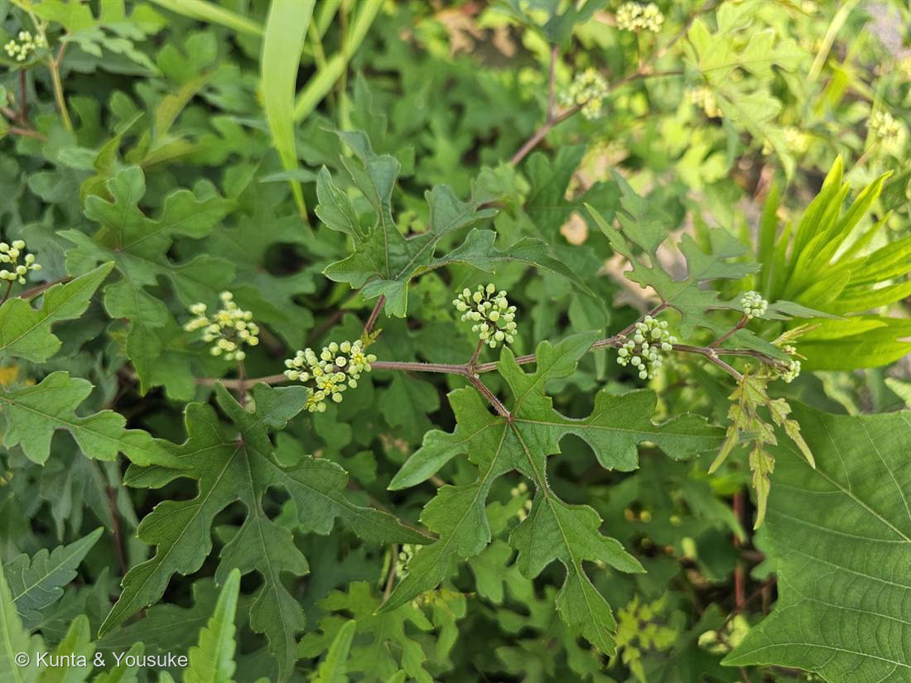
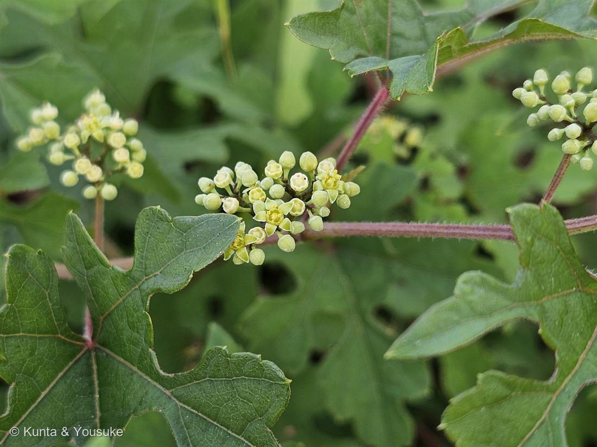
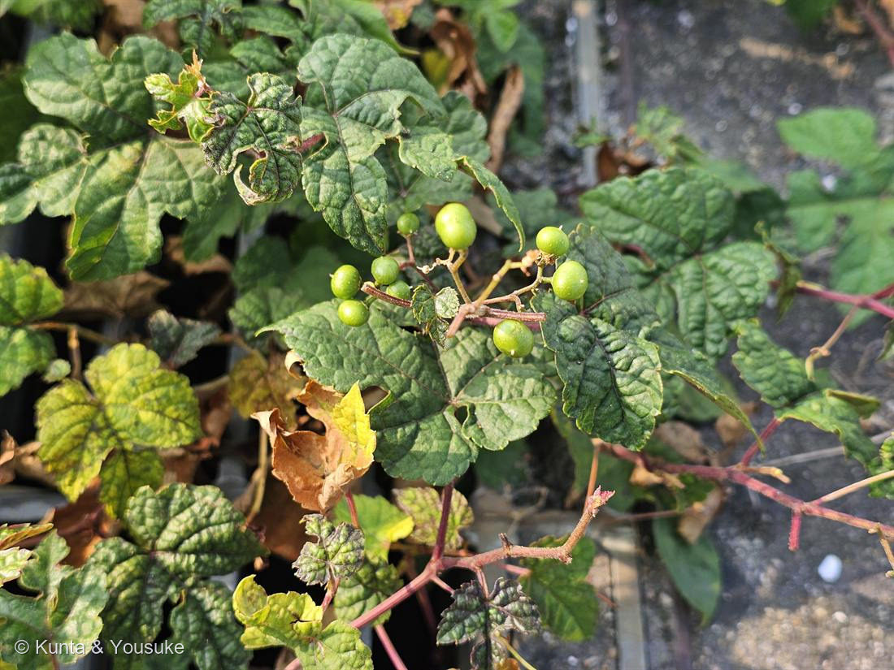
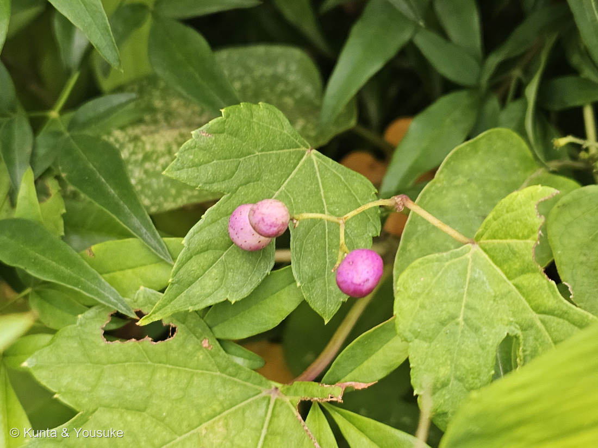
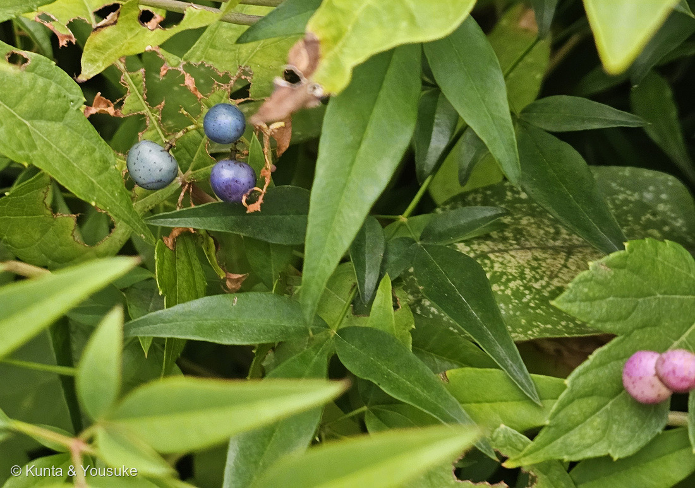

地図を読み込んでいるよ…
🔍 写真も地図も、押しているあいだ拡大して見られるよ（スマホは指を置いてすこし待ってね）。
🌍 の地図＝この子がもともと自生している場所を緑に。日本全国のほか、朝鮮半島・中国・台湾など東アジア一帯に分布する在来のつる草（アメリカにも帰化）。道ばた・林縁・荒れ地の、明るいヤブにふつうに生える。
⭐日本全国＋東アジア一帯の、在来のつる草——だから北海道も塗ってある（091アカメガシワは岩手・秋田県以南だったけど、この子は全国）。⚠アメリカにも帰化しているけど、そこは塗っていない（もとの故郷じゃないから）。⭐道ばたや荒れ地にふつうにいる、いちばん身近なつる——でも図鑑では初めてのブドウ科なんだ。
⚠ 地図は国（日本と中国だけ県・省）までしか塗れないから、ほんとうの分布より広く見えていることがあるよ。地図はだいたいの場所。正確なところは、上の文を見てね。
ノブドウ（野葡萄）
Ampelopsis glandulosa var. heterophylla
別名 · イヌブドウ・カラスブドウ／ 深く切れ込む型 · キレハノブドウ／ ⚠実は食べられない（名は「ブドウ」でも）／ 原産 · 日本全国〜東アジア
ブドウ科 · Vitaceae（ノブドウ属 Ampelopsis）── 図鑑で初めての科・ブドウ目も初めて
燻太さんが、小さな花をよく見た「深く切れ込んだ葉っぱに、小さなお花。よく見たら、星みたいな形。」──その「星」（花盤を囲む5弁）が、ノブドウ属の名札だった。
名前と学名の由来 ── 「ブドウに似た草」
- ⭐属名 Ampelopsis は、ギリシャ語の ampelos（ブドウ・つる）＋ opsis（似た姿）＝「ブドウのつるに似たもの」。──ブドウそっくりのつるだけど、ブドウ属じゃない、という名前。
- 種小名 glandulosa は「腺のある」、変種名 heterophylla は「いろいろな葉（heteros ちがう＋phyllon 葉）」＝写真①②で見た、深い切れ込みと丸い葉のちがいそのもの。和名「野葡萄」＝野に生えるブドウ（でも食べられない）。
この植物のこと
- ブドウ科ノブドウ属の、つる性の落葉低木。日本全国＋東アジアに分布する在来のつる草。道ばた・林縁・荒れ地の、明るいヤブにふつうにいる。
- 茎は赤みを帯びて、毛が生える（写真の赤い茎）。花期は7〜8月、両性花。
- ⚠「食べられる」は、こういう子ほど気をつけたい。ノブドウは食用にならない（不味い・虫こぶも多い）。──ブドウの名がついていても、口に入れないでね。
- ⭐薬用：「蛇葡萄（じゃぶどう）」として漢方に。民間では乾かした葉をお茶にした、という言い伝えもある（Wikipedia）。
- ⭐おまけ植物は エビヅル（Vitis ficifolia）＝こっちは本物のブドウ属（Vitis）で、実は甘くて食べられる。ノブドウ（Ampelopsis）とエビヅル（Vitis）は、同じブドウ科でも属がちがう。似たような切れ込む葉のつる草だけど、片方は食べられて、片方は食べられない——見分けて、探してみよう。
⭐⭐⭐ 燻太さんの「よく見たら、星みたいな形」
- 燻太さんの言葉：「深く切れ込んだ葉っぱに、小さなお花。よく見たら、星みたいな形。」──その「星」が、この子の名札だった。
- ⭐写真②を見て。直径4mmほどの小さな花（Wikipedia）。中心にまるい「花盤（かばん）」があって、そのまわりに花弁が5枚、ぴんと平らに開いて、星の形になる。
- ⭐⭐この「花盤＋星形の5弁」が、ノブドウ属（Ampelopsis）の目印。ブドウの仲間なのに、実がなる前の花は、こんなに小さくて星みたい。──「小さいお花、よく見たら星」＝燻太さんの観察が、そのまま同定の決め手になった。
⭐⭐⭐ 図鑑で初めての「ブドウ科」
- ⭐⭐ノブドウは、この図鑑で初めてのブドウ科（ブドウ目）。──90種めをこえて、やっとブドウの一族が仲間入りしたよ。
- ⭐つる性で、巻きひげで登る。090 キュウリと同じ「巻きひげで登る子」だけど、ブドウ科の巻きひげは、節ごとに先が2つに分かれる（Wikipedia）＝写真をよく見ると、二またのひげが出ている。葉と向かいあって（対生して）出るのがブドウ科の巻きひげのくせ（キュウリのウリ科とは、つき方がちがう）。
- ⭐探したいリストの「ヤブガラシ」も、同じブドウ科。──でもヤブガラシは葉が「鳥足状複葉」（5枚の小葉が指のように分かれる）。この子は1枚の葉が深く切れ込む単葉。同じ科でも、葉の作りがまるでちがう。
⭐ 深く切れ込んだ葉 ── だから「キレハノブドウ」
- ⭐ノブドウの葉は、切れ込みが「浅いものから深いものまで、さまざま」（Wikipedia）。学名の heterophylla は「いろんな葉（異なる葉）」という意味。──一株のなかでも、葉の形がバラバラ。
- ⭐⭐この子は、特に深く切れ込んでいる。この「深く切れ込む型」を、とくにキレハノブドウ（切葉野葡萄）と呼んで区別することがある（Wikipedia）。写真①の、羽のように裂けた葉がそれ。──燻太さんの「深く切れ込んだ葉っぱ」＝この子のいちばんの見た目。
⭐⭐⭐ 秋の実は宝石みたい ── でも、その色は「虫のしわざ」かも
- ⭐秋になると、実は緑→青・紫・碧（あお）・白と、いろんな色に色づく（Wikipedia）。まるでラムネ玉や宝石みたいで、とてもきれい。
- ⚠⚠でも、食べられない。「食味は不味い」（Wikipedia）。名前は「ブドウ」なのに、食用にならないんだ。
- ⭐⭐⭐そして、あの色とりどりの正体には、ひみつがある。──ノブドウの実は、しばしば虫こぶ（虫えい）になっていて、「色とりどりな、不整形な形になる」（Wikipedia）。中に虫（タマバエやハチの仲間）が入って、実がふくらんで、あんな不思議な色になることが多い。
- ⭐だから、あの宝石みたいな色は、じつは植物だけの色じゃなくて、「お客さん（虫）」が作った色でもあるんだ。──きれいだけど、食べられない。色は、虫のしわざ。見た目と正体がちがう、という点では、030 バラ（皮刺・偽果）たちの仲間だね。
- ⚠⚠⚠⭐【2026-08-29 追記】この「色は、虫のしわざ」は、言いすぎだったかもしれない。──じっさいに色づいた実を見にいったら、5色ぜんぶ、形はまるかった。⭐くわしくは、下の「実の色を、じっさいに見にいった」の節を読んでね。
⭐⭐⭐ 写真③ ── 燻太さんが実を見つけた（そして「いろんな葉」の証拠に）
- ⭐⭐⭐今日（2026年7月18日）、燻太さんが「もしかして、ノブドウの果実ってこれかな？」と、実の写真を足してくれた。──合っているよ。これはノブドウの果実。
- ⭐決め手＝実のつき方。赤みのある茎から、二またに枝分かれした果序の先に、丸い実がまばらにつく＝ノブドウ属（Ampelopsis）の果序（ブドウ〈Vitis〉のように房でぎゅっと固まらない）。まだ緑の若い実で、これから青・紫・碧に色づいていく。
- ⭐⭐⭐でも、いちばん面白いのはここ。この株の葉は、丸っこくて浅い切れ込み。──写真①②の、羽のように深く裂けた「キレハ」の葉とは、まるでちがう。だからたぶん別の株。でも、どちらも同じノブドウなんだ。
- ⭐⭐これこそ、学名 heterophylla＝「いろんな葉」の、生きた証拠。──同じ種なのに、株によって、葉が深く裂けたり、丸かったり。「葉の形だけ」では決められない植物だと、この2枚が教えてくれる。だから、花（星）と実（二また果序）で見分けるのが確かなんだね。
⭐⭐⭐⭐⭐ 2026-08-29 追記 ── 実の色を、じっさいに見にいった（写真④⑤）
- ⭐燻太さんの言葉「ノブドウの果実が色づいてきていたよ。場所はナツメの花を撮影した場所。」──撮影は2026-08-28 の朝8時1分、2秒ちがいの2枚。⭐196 ナツメと同じ植えこみだよ（⚠よそのおうちの植えこみなので、場所は書かないでおくね）。
- ⭐⭐⭐⭐⭐この2枚に、5色がそろって写った。──淡いピンク／濃いマゼンタ／青灰色／青／すみれ色。⭐⭐とくに写真⑤がすごい＝左上に青と青灰とすみれ色の実、右下に淡いピンクの実が、同じ一枚のなかに写っている＝⭐同じつるの、同じ日で、これだけちがうんだ。
- ⭐⭐正常な実の色の変わりかたは、こう。──「緑色から紫紺色に変わり、やがて黒紫色になる」、大きさは直径10mm程度（木の実の写真館）。
- ⭐⭐虫こぶのほうは、名前がついている。──虫こぶの名はノブドウミフクレフシ、作るのはノブドウミタマバエ。「直径12〜13ミリで、表面に凹凸があり、色は変化する」（木の実の写真館）＝⭐正常な実よりひとまわり大きくて、でこぼこするのが目じるし。
- ⚠⚠⚠⚠⚠ここから、正直に書くね。──このページの上のほうで、ぼくは「色は、虫のしわざ」と書いた。⚠でも、じっさいの写真では、それを確かめられなかった。
- ⚠⚠理由①＝5つとも、形がまるかった。──虫こぶの見わけどころは「表面に凹凸があり」＝いびつになること。⚠でも写真④⑤の実は、どれもきれいな球〜卵形で、でこぼこしていない。
- ⚠⚠理由②＝「いびつな塊」に見えたものが、そうではなかった。──写真④の左のピンクは、ぱっと見「ひとつのふくらんだ塊」に見えた。⭐でも大きく拡大したら、2つの実が前後に重なっているだけだった＝あいだにきれいな三日月形のふちが通っていて、どちらもまるい。⭐⭐ぼくは一度「虫こぶだ」と思いかけて、拡大して取り消したよ。
- ⚠理由③＝大きさは、決め手にならなかった。──「10mm か 12〜13mm か」で決まるはずなので、写真の中で実の大きさをくらべてみた。⚠でも定規が写っていないし、実は前後にならんでいるので、遠近だけで1〜2割ちがって写ってしまう＝⭐299 アサガオで覚えた「定規で測る」やりかたが、ここでは使えなかった。
- ⭐⭐理由④＝出典じたいが、慎重だった。──木の実の写真館は、色とりどりが虫こぶのせいかどうかについて「確認されていない部分が多い」と書いて、言いきっていない。⭐関わっている虫が1種とはかぎらない、とも。
- ⭐⭐⭐だから、いま言えるのはここまで。──「同じつるに、同じ日に、5色あった」。⚠「その色が虫のしわざかどうかは、まだ分からない」。⭐⭐ぼくは、Wikipediaの一文を、そのまま「答え」にしてしまっていたんだね。
- ⭐⭐⭐⭐決めるための手（宿題）。──①定規をそえて撮る（10mmか、12〜13mmか）／②表面のでこぼこが分かるくらい寄って撮る／③落ちている実があったら、割って中を見る（幼虫がいれば虫こぶ）＝⚠⚠よそのおうちの植えこみだから、ついている実はちぎらない（⭐みんなの場所の植物を、調べるために勝手にちぎらない）。
- ⭐⭐おまけの発見＝葉の形が、また変わっていた。──写真④の葉は、浅く3つに裂けたカエデ形＝⚠写真①の深く切れ込んだキレハ型とは、まるでちがう。⭐⭐種小名 heterophylla＝「いろいろな葉」の証拠が、これで3枚目だよ（①深い切れこみ／③浅い切れこみ／④浅い3裂）。
- ⭐⭐⭐いっしょに茂っている低木のこと──ぼくが「ナンテンに見えるけれど決めきれない」と書いたら、燻太さんが答えてくれた。「陽介がナンテンだと思った葉っぱ、多分正解だと思うけど、花がまだ出ていないんだ。」⚠だから、まだ確定ではない＝⭐ナンテンの花は初夏（6〜7月）に白い小さな花を円錐状につけ、冬に赤い実になる＝⭐⭐どちらかが出れば決まるので、待つことにしたよ。（⚠図鑑にナンテンはまだ入っていないので、当たっていたら新しい子になる）
- ⭐⭐⭐⭐そして、燻太さんがくれたいちばん大事な一言。「あそこはいろんな植物たちが場所を取り合っているから、ちゃんと観察しないと見逃しちゃうかもしれない。」──⭐⭐たしかに、この2枚の写真だけでも、ノブドウのつると細長い小葉の低木と斑の入った大きな葉が、ぜんぶ重なりあって写っている。⭐ノブドウはつる草だから、こういう「ほかの植物にのぼって暮らす」場所がいちばん似合うんだね。⭐⭐ここは、一度で見きれない場所。何度も立ち寄る場所だよ。
参考：Wikipedia「ノブドウ」（Ampelopsis glandulosa var. heterophylla・ブドウ科ノブドウ属・日本全国＋東アジア一帯・アメリカに帰化・花は直径4mmほどの球形・花期7〜8月・葉は切れ込みが浅い〜深いまで様々／特に深いのがキレハノブドウ・節ごとに先が2つに分かれる巻きひげ・実は緑→青・紫・碧・白／食味は不味い／虫こぶで色とりどりな不整形に・薬名「蛇葡萄」） ⭐【2026-08-29 追記の出典】木の実の写真館「ノブドウの果実」（正常な果実＝「緑色から紫紺色に変わり、やがて黒紫色になる」／直径10ミリ程度／虫えいはノブドウミフクレフシ、原因昆虫はノブドウミタマバエ／虫えいは「直径12〜13ミリで、表面に凹凸があり、色は変化する」／⚠色とりどりが虫こぶのせいかどうかは「確認されていない部分が多い」として言いきっていない）。⭐撮影時刻は、燻太さんの原本のEXIFから読んだよ（⚠公開画像はEXIFを落としてある）。